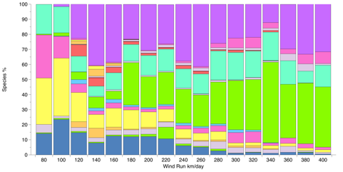
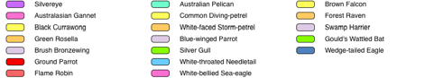

Page contents:
- Insights and predictions from the Atlas of Living Australia
- The Spatial Portal of The Atlas of Living Australia
- Wind-farms
- Wind-farms and collisions
- Bird and bat distributions
- Intersecting the vulnerable assemblage and high wind areas
- Conclusions and future directions
- About the Authors
- References
- Acknowledgements
- Link to Woolnorth Holdings Wind Farm Data
- Spatial Portal Functions used
Insights and predictions from the Atlas of Living Australia
Authors: Eric Woehler and Lee Belbin

Wind is a significant and growing alternative energy source for Australia and other countries, with areas in southern Australia identified as suitable sites for wind farms. Wind farms around the world are however known to affect some birds and bats by striking wind turbine blades or possibly from barotrauma (rapid changes in air pressures associated with the moving blades) . There is currently insufficient information to determine if baraotrauma is an issue.
This case study asks a number of questions using the Atlas of Living Australia’s Spatial Portal as a workbench:
- What birds and bat species appear at risk?
- Is it possible to identify areas of Australia that could be environmentally sensitive for wind farms?
The authors recognize the benefits of alternatives to coal fired power stations. This study also recognizes the work the wind power industry is doing to understand and minmize any affects on the environment. Much work has been done in Tasmania to identify what species are at risk, why they are at risk and their associated sensitivity/conservation status (see Hull et al.). Such detailed site-based studies provide a solid base for evaluating local environmental impacts.
This study is however a demonstration of the utility of the Atlas of Living Australia to provide national baseline data and tools that can be effective for initial desktop analysis for a wide range of ecologically-related issues. We will use a broad brush study to demonstrate how ecological data can be used in the Atlas. This study is national in scope, but acknowledges Woolnorth Holdings (25% share owned by Hydro Tasmania), the owner of the two Tasmanian wind farms (Bluff Point and Studland Bay) for providing of ‘bird-strike’ data for its two wind farms. Sadly, Tasmania is the only Australian State or Territory where these data are currently public.
This case study is focused on bird strikes and not on any evaluation of the environmental impact of wind versus other power generation options. The localized impact of wind farms on avifauna is not compared, for example, with broader scale spatial and temporal environmental affects of coal-fired power generation.
The Spatial Portal of The Atlas of Living Australia
The Spatial Portal of the Atlas accesses a large volume of species sightings, museum records, environmental layers (see http://dashboard.ala.org.au) and a suite of analytical tools. This portal facilitates rapid desktop assessments of species in association with environmental layers such as climate, topography, substrate, vegetation and marine variables (see http://spatial.ala.org.au/layers). Other aspects, such as conservation status (endangered, rare, etc) or range-restrictions are available for analyses to further refine initial assessment efforts.
Data within the Atlas needs to be screened for ‘fitness for purpose’. For this study, we have accepted all but obviously invalid data. Data records in the Atlas are comprised of fields for including for example, spatial uncertainty of the observations. Note however that records may not code information for one or many data fields. The Atlas does apply internal checks of data and flags any potential issues in the record. In addition, annotations can be made against any parameters within any record. Such additional information remains with the record.
Wind-farms
There are approximately 26 wind farms operating in Australia with a combined maximum capacity of 2,000 MW. Another 100 wind-farms with a combined maximum capacity of more than 9,100 MW are under consideration, in planning assessment or under construction (Figure 1). Not all these proposed wind farms will be built. Some will not be approved, some may not be economic or may be opposed by the community.
Figure 1. Operational (pink, n=26) and proposed (blue, n= 100) wind-farms in Australia, with an overlay of the annual mean wind-run (km.day-1). The legend refers to the wind-run layer.
There are three levels of Australian leglislation that may affect the siting and operation of wind farms. Depending on the siting of the wind farm, local government, State/Territory and Federal leglislation may all apply. Local government will usually need to assess proposals for wind farms and State/Territory governments will also usually assess under their relevant leglislation. The Federal government may also call in a proposal if any development comes under the Environmental Protection and Biodiversity Protection Act 1999 (EPBC). Two criteria under that act could apply to wind farms-
- nationally threatened species and ecological communities and/or
- migratory species
Assessments may require bird surveys in the area to identify species likely to collide with the turbine blades and estimates made of the collision rates over the lifetime of the wind-farm (nominally 20 to 25 years).
There is an alignment between existing and proposed wind farms, wind-run and relative proximity to population centres. Wind-farms are sited for a range of reasons, one being in areas of higher average winds. One measure of wind intensity is annual mean wind run, expressed as km.day-1, Figure 1. Note: Environmental layers in the Spatial Portal are generally 0.01 degree x 0.01 degree (~1km) grid.
Currently, 73% of operating wind-farms, but only 43% of planned wind-farms are within 25km of the coast (Figure 2). The farthest inland operational wind-farm is 116km from the coast at Challicum Hills, Victoria. All current and proposed wind-farms are located where the annual mean wind run exceeds 120km.day-1 (Figure 2).
Figure 2. The relationship among 26 operational (pink) and 100 proposed (blue) wind-farms, annual mean wind-run (km.day-1) and distance from the coast (km).
Wind-farms and collisions
It is unfortunate that data on bird strikes with wind farms are only publicly available from the Tasmanian wind farms. With no other data available, the list of bird and bat species recorded (Table 1) as colliding with the Woolnorth Holdings two wind farms in north-west Tasmania was used to investigate the potential overlap between species observations and operating and proposed wind-farms nationally. Note: The list of affected species in Table 1 does not currently include introduced species. This list is approximately 20% of all species observed with the area (see Hull, submitted).
If a species assemblage that appears to be vulnerable from Tasmanian data also occurs widely on the mainland, then without additional strike data, we can only hypothesize that this assemblage would be also be vulnerable at mainland wind-farms in areas of similar observational density. Note that the Tasmanian Wedge-tailed Eagle is a subspecies, so inference about other Wedge-tailed Eagle subspecies on the mainland is not proven.
|
Birds |
|
| Australasian gannet | Morus serrator |
| Australian pelican | Pelecanus conspicillatus |
| Black currawong | Strepera fuliginosa |
| Blue-winged parrot | Neophema chrysostoma |
| Brown falcon | Falco berigora |
| Brush bronze-wing | Phaps elegans |
| Common diving petrel | Pelecanoides urinatrix |
| Flame robin | Petroica phoenicea |
| Forest raven | Corvus tasmanicus |
| Green rosella | Platycercus caledonicus |
| Grey-backed storm-petrel | Oceanites nereis |
| Ground parrot | Pezoporus wallicus |
| Short-tailed shearwater | Puffinus tenuirostris |
| Silver gull | Chroicocephalus novaehollandiae |
| Silvereye | Zosterops lateralis |
| Swamp harrier | Circus approximans |
| Tasmanian Wedge-tailed eagle | Aquila audax fleavi |
| White-bellied sea-eagle | Haliaeetus leucogaster |
| White-faced storm-petrel | Pelagodroma marina |
| White-throated needle-tail | Hirundapus caudacutus |
|
Bat |
|
| Gould’s wattled bat | Chalinolobus gouldii |
Table 1. The assemblage of bird and bat species reported to have struck by the Woolnorth Holding’s wind-farm in northwest Tasmania.
Bird and bat distributions
The New Atlas of Australian Birds 2002 (BirdLife Australia, formerly Birds Australia) provides a detailed inventory of the distribution of Australia’s birds over much of the Australian continent. This dataset and its updates are available in the Atlas of Living Australia. The bird atlas data are constrained by the survey effort – in some cases logistic access to areas limits the frequency and intensity of surveys; remote areas have been surveyed less frequently than areas closer to urban concentrations. The preferred bird survey methodology comprises 20 minute, 2-hectare surveys. These data and a wide range of other bird and bat observations from museums, State and Territory surveys and citizen observations allows us to identify areas where the assemblage reported as striking the Tasmanian wind farms occur elsewhere in Australia. The data also enables us to determine how species distributions intersect with operating and proposed wind-farms and the regional wind field.
Figure 3 (the coincidence of the species assemblage occurrence density with existing and proposed wind-farms) was generated in the Spatial Portal using the Tools | Point to grid function. The analysis used a 7×7 moving average window applied to all observations of the ‘vulnerable’ species assemblage within 5x5km grid cells nationally. The outputs of the moving average are two new gridded layers; an assemblage density as in Figure 3 and species richness layer. The moving average was used here as the simplest method for smoothing out extremes in survey data associated with infrastructure and high of human population densities.
Transforming the point occurrence data of the assemblage into gridded density values also enables a more direct comparison with the gridded wind run values. There is a strong spatial relationship between the density of the species assemblage and operating and proposed wind-farms. The species assemblage density reflects the distribution of infrastructure and human population density and the survey effort previously noted.
Figure 3. The bird and bat assemblage from Table 1 expressed as an observed density (using a 5km moving average with a 7×7 cell window) with the operational (pink) and proposed (blue) wind-farms shown.
Intersecting the vulnerable assemblage and high wind areas
From our data, no single foraging or taxonomic guild predominates in the species assemblage from the Tasmanian wind farms. The species in this assemblage represent carnivores, scavengers, nectivores and ground- and aerial-feeders. A site-based study by Hull (submitted) does however identify family, behavioural/foraging zone correlates with turbine blade strikes.
The relationship between the vulnerable assemblage of species and high wind areas (areas of potential wind-farms) can be estimated in a number of different ways. The wind run values could be sampled at the species assemblage occurrence locations and the bird species’ frequencies analysed as in Figure 4. Silvereyes and Silver Gulls are predominant species in areas where the wind run exceeds 140 km.day-1 while Wedge-tailed Eagles and Brown Falcons are predominant in areas where the wind run is below 240 km.day-1. Other species are present in low numbers, typically contributing fewer than 10% of the records for each wind run frequency class.


Figure 4. Frequencies of the bird assemblage species with respect to wind run at the location of assemblage occurrence records.
Conclusions and future directions
The data from the Tasmanian wind farms in north-west Tasmania have provided valuable information about birds that appear vulnerable to being struck by wind-turbines or bats that may also be affected by barotrauma or collisions with turbines.
Species in the vulnerable assemblage are nationally widespread, and are therefore likely to be at similar risk from wind-farms sited where this assemblage is densely observed. Without bird strike data from other States and territories, we are unable to infer anything about the vulnerability of species on the mainland that do not occur in Tasmania.
Figure 3 shows areas that may be more sensitive to the identified assemblage for existing and proposed wind farms. The availability of bird and bate strike data from all Australian wind farms is fundamental to furthering research into bird strikes. With these data, the vulnerable assemblage could be tuned to the area and weighted by individual species vulnerability and species rarity. The assemblage density could then be weighted, providing a more refined analysis of overall susceptibility.
There are a wide range of determinants of the location of a wind-farm, including access to land and grid connectivity. While these factors are presently unavailable to the Atlas, point and area data can easily be imported into the Atlas for subsequent analysis (as were the wind farm sites in this study). Data and results can also be downloaded from the Atlas in CSV format and analysed with other desktop tools.
With increasing interest in renewable energy, access to a compounding, comprehensive and fine scale data and analysis tools is hoped for. Until that time, the value of data from Woolnorth Holding’s Tasmanian wind farms with data and tools from the Atlas of Living Australia data is acknowledged and appreciated.
As with all Atlas case studies, this work is indicative and not definitive. The study is a first step in beginning to understand the issues in collision risk modelling.
About the Authors
Dr Eric Woehler has been actively involved in many facets of ornithological research for more than 35 years. While his primary foci are long term seabird and shorebird population studies, he has also conducted studies on the community ecology of the Southern Ocean seabird assemblage. His efforts in Tasmania are directed towards the conservation of Tasmania’s birds and their habitats, primarily the management of coastal areas and beach-nesting birds, and the role of sea-level rises on future shorebird populations. Dr Woehler has been involved in the assessment process of several wind farm projects in Tasmania since 2000. This involvement has been directed towards minimising the potential impacts of proposed wind farms on the avifauna of the area.
Lee Belbin led the team in the development of the Atlas Spatial Portal, and is now Scientific Advisor to the Atlas of Living Australia. Lee started working life as an exploration geologist in Australia and Canada in 1970. In 1972, he spent 6 years in research and teaching analytical geology at the Australian National University. From 1979 to 1995 Lee’s research moved to quantitative ecology at CSIRO, with the last three years focused on project management. From 1995 to 2005, he established and managed one of the world’s first multidisciplinary science data centres at the Australian Antarctic Division. During this time he developed national and international policies and methods for information management and state of the environment reporting. For the past 6 years, his company (Blatant Fabrications Pty Ltd) has focused on managing national and internal projects related to sharing scientific information. Lee has published more than 100 papers on geology, ecology, information management and policy.
References
G. Barrett, A. Silcocks, S. Barry, R. Cunningham and R. Poulter (2003). The New Atlas of Australian Birds. Birds Australia, 828 pages.
C.L. Hull and S. Muir (2010). Search areas for monitoring bird and bat carcasses at wind farms using a Monte-Carlo model. Australian Journal of Environmental Management, 17, 77-87.
C.L. Hull & L. Cawthen (2012): Bat fatalities at two wind farms in Tasmania, Australia: bat characteristics, and spatial and temporal patterns, New Zealand Journal of Zoology, 39(4): 1-11. DOI:10.1080/03014223.2012.731006. Link: http://dx.doi.org/10.1080/03014223.2012.731006
CL Hull , EM Stark , S Peruzzo & CC Sims (2013): Avian collisions at two wind farms in Tasmania, Australia: taxonomic and ecological characteristics of colliders versus non-colliders, New Zealand Journal of Zoology, 40:1, 47-62. To link to this article: http://dx.doi.org/10.1080/03014223.2012.757243
Acknowledgements
Our thanks to Cindy Hull for providing the Woolnorth Holdings Tasmanian wind farm strike data and for comprehensive advice on the study. Thanks also to Ben Raymond for statistical advice and to Adam Collins for his expert assistance with the dark art of developing many of the tools in the Spatial Portal.
Link to Woolnorth Holdings Wind Farm Data
Access to the strike data can be found at http://www.hydro.com.au/environment/wind-environment-program.
Spatial Portal Functions used
- Import | species assemblage
- Import | points (wind farms)
- Add to Map | Layers | Wind run (annual)
- Tools | Points to grid (species assemblage)
- Export | Point sample (species assemblage on wind run)

{kind=link}
{kind=link}